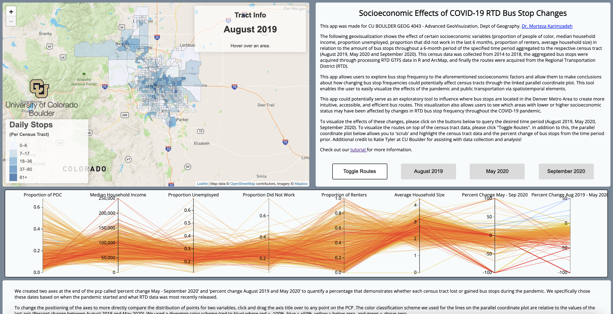

Socioecomic Effects of RTD Bus Stop Changes Over COVID-19
Project Link: https://seriousmapper.github.io/GEOG4043-FinalProject/
The following geovisualization shows the effect of certain socioeconomic variables (proportion of people of color, median household income, proportion unemployed, proportion that did not work in the last 6 months, proportion of renters, average household size) in relation to the amount of bus stops throughout a 6-month period of the specified time period aggregated to the respective census tract (August 2019, May 2020 and September 2020). This census data was collected from 2014 to 2018, the aggregated bus stops were acquired through processing RTD GTFS data in R and ArcMap, and finally the routes were acquired from the Regional Transportation District (RTD).
This app allows users to explore bus stop frequency to the aforementioned socioeconomic factors and allow them to make conclusions about how changing bus stop frequencies could potentially affect census tracts through the linked parallel coordinate plot. This tool enables the user to easily visualize the effects of the pandemic and public transportation via spatiotemporal elements.
This app could potentially serve as an exploratory tool to influence where bus stops are located in the Denver Metro Area to create more intuitive, accessible, and efficient bus routes. This visualization also allows users to see which areas with lower or higher socioeconomic status may have been affected by changes in RTD bus stop frequency throughout the COVID-19 pandemic.